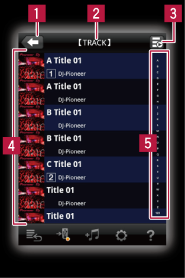

Paneles del rekordbox
Panel explorador

 Se usa para volver al nivel de arriba.
Se usa para volver al nivel de arriba.
 La ubicación (nivel) que está siendo explorada se visualiza aquí.
La ubicación (nivel) que está siendo explorada se visualiza aquí.

 Cuando se enlaza con reproductores DJ, el estado de reproducción del reproductor DJ se visualiza.
Cuando se enlaza con reproductores DJ, el estado de reproducción del reproductor DJ se visualiza.
 Aquí se visualiza una lista de los álbumes, títulos, etc., que están en la ubicación (nivel) que está siendo explorada. Cuando se toca una pista, el panel del reproductor se abre y empieza la reproducción.
Aquí se visualiza una lista de los álbumes, títulos, etc., que están en la ubicación (nivel) que está siendo explorada. Cuando se toca una pista, el panel del reproductor se abre y empieza la reproducción.
Cuando se toca una pista mientras se enlaza con reproductores DJ, el panel de enlace (CDJ/XDJ) o el panel de enlace (XDJ) se abre.
 Se usa para desplazar la lista a la línea que empieza desde la letra especificada.
Se usa para desplazar la lista a la línea que empieza desde la letra especificada.
Indicadores de estado de pistas
Consulte la tabla de abajo para conocer los iconos visualizados en el panel explorador para pistas individuales.
Icono | Descripción |
 | El archivo de música está reproduciéndose. Cuando se enlaza con reproductores DJ se visualiza un icono que indica el número del reproductor o deck que está reproduciendo (“1”, “2”, etc.). |
 | No se pueden encontrar el archivo de música. |
 | El archivo de música está siendo analizado. |
 | Añadido a lista de fichas . |
 | Visualizado como archivos de música para el cual se han establecido cues, bucles y hot cues. |